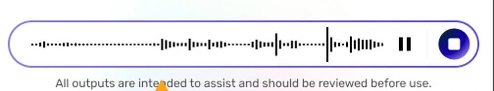

Voice and chat input
Doctors record the session. The EMR fills itself from the transcript.
A waveform with scrub and playback, not a record button. The doctor can hear what was said, which matters when the system has written into a clinical record on the strength of it.